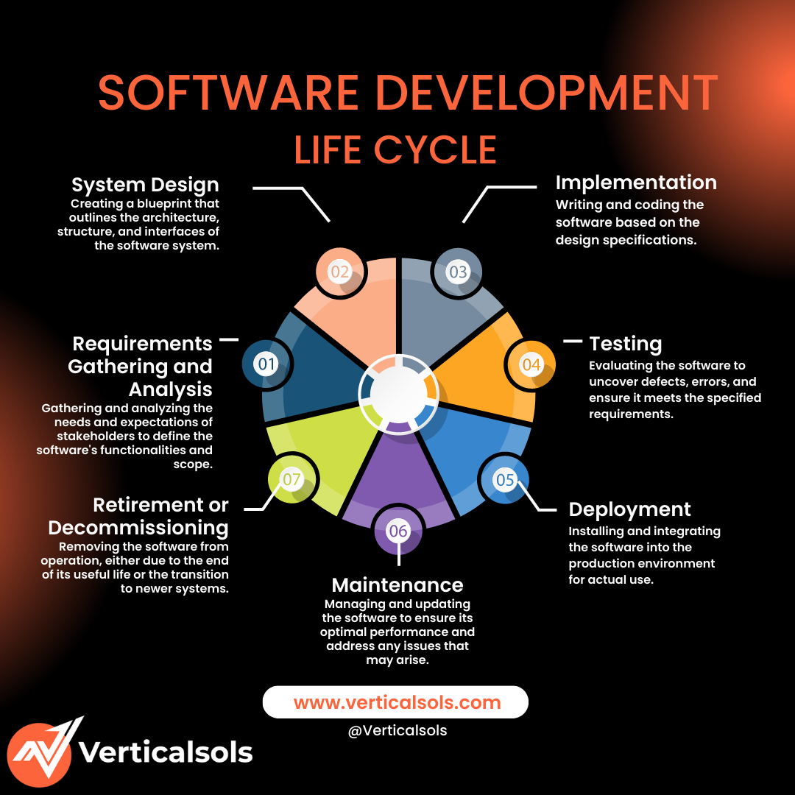

The Software Development Life Cycle (SDLC) is a structured process that software teams follow to create high-quality applications. It consists of distinct phases, each focused on a specific aspect of software creation and maintenance.

Software Development Life Cycle (SDLC)
Phases of SDLC:
1. Requirements Gathering and Analysis: Understanding stakeholder needs and defining system features.
2. System Design: Creating architectural plans, data flows, and UI structures.
3. Implementation: Writing actual code based on the design specifications.
4. Testing: Detecting bugs and verifying that the software meets its requirements.
5. Deployment: Installing the application in a live environment.
6. Maintenance: Updating, patching, and ensuring long-term software health.
7. Retirement: Safely removing outdated software or migrating to newer systems.
The SDLC helps teams manage complexity, reduce risk, and ensure that software projects meet user expectations efficiently.